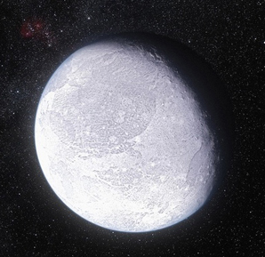

| Sun | The Sun is by far the largest object in the solar system. It contains more than 99.8% of the total mass of the Solar System (Jupiter contains most of the rest). It is often said that the Sun is an "ordinary" star. That's true in the sense that there are many others similar to it. But there are many more smaller stars than larger ones; the Sun is in the top 10% by mass. The median size of stars in our galaxy is probably less than half the mass of the Sun.Learn more |
|
|---|---|---|
| Mercury | The Sun is by far the largest object in the solar system. It contains more than 99.8% of the total mass of the Solar System (Jupiter contains most of the rest). It is often said that the Sun is an "ordinary" star. That's true in the sense that there are many others similar to it. But there are many more smaller stars than larger ones; the Sun is in the top 10% by mass. The median size of stars in our galaxy is probably less than half the mass of the Sun.Learn more |
|
| Venus | Venus is the second planet from the Sun, orbiting it every 224.7 Earth days. It has the longest rotation period (243 days) of any planet in the Solar System and rotates in the opposite direction to most other planets. It has no natural satellite. It is named after the Roman goddess of love and beauty. It is the second-brightest natural object in the night sky after the Moon, reaching an apparent magnitude of −4.6, bright enough to cast shadows.Learn more | |
| Earth | Earth (otherwise known as the world, in Greek: Γαῖα Gaia,or in Latin: Terra) is the third planet from the Sun, the densest planet in the Solar System, the largest of the Solar System's four terrestrial planets, and the only astronomical object known to harbor life.Learn more | |
| Moon | The Moon is Earth's only permanent natural satellite. It is one of the largest natural satellites in the Solar System, and the largest among planetary satellites relative to the size of the planet that it orbits (its primary). It is the second-densest satellite among those whose densities are known (after Jupiter's satellite Io).Learn more | |
| Mars | Mars is the fourth planet from the Sun and the second-smallest planet in the Solar System, after Mercury. Named after the Roman god of war, it is often referred to as the "Red Planet" because the iron oxide prevalent on its surface gives it a reddish appearance. Mars is a terrestrial planet with a thin atmosphere, having surface features reminiscent both of the impact craters of the Moon and the valleys, deserts, and polar ice caps of Earth.Learn more | |
| Ceres | Ceres is the largest object in the asteroid belt that lies between the orbits of Mars and Jupiter. Its diameter is approximately 945 kilometers (587 miles), making it the largest of the minor planets within the orbit of Neptune. The thirty-third-largest known body in the Solar System, it is the only one identified orbiting entirely within the orbit of Neptune that is a dwarf planet.Learn more | |
| Asteroid Belt | The asteroid belt is the circumstellar disc in the Solar System located roughly between the orbits of the planets Mars and Jupiter. It is occupied by numerous irregularly shaped bodies called asteroids or minor planets. The asteroid belt is also termed the main asteroid belt or main belt to distinguish it from other asteroid populations in the Solar System such as near-Earth asteroids and trojan asteroids.Learn more | |
| Jupiter | Jupiter is the fifth planet from the Sun and the largest in the Solar System. It is a giant planet with a mass one-thousandth that of the Sun, but two and a half times that of all the other planets in the Solar System combined. Jupiter is a gas giant, along with Saturn, with the other two giant planets, Uranus and Neptune, being ice giants.Learn more | |
| Saturn | Saturn is the sixth planet from the Sun and the second-largest in the Solar System, after Jupiter. It is a gas giant with an average radius about nine times that of Earth. Although only one-eighth the average density of Earth, with its larger volume Saturn is just over 95 times more massive. Saturn is named after the Roman god of agriculture; its astronomical symbol (♄) represents the god's sickle.Learn more | |
| Comets | A comet is an icy small Solar System body that, when passing close to the Sun, heats up and begins to outgas, displaying a visible atmosphere or coma, and sometimes also a tail. These phenomena are due to the effects of solar radiation and the solar wind upon the nucleus of the comet.Learn more | |
| Uranus | Uranus is the seventh planet from the Sun. It has the third-largest planetary radius and fourth-largest planetary mass in the Solar System. Uranus is similar in composition to Neptune, and both have different bulk chemical composition from that of the larger gas giants Jupiter and Saturn.Learn more | |
| Neptune | Neptune is the eighth and farthest known planet from the Sun in the Solar System. It is the fourth-largest planet by diameter and the third-largest by mass. Among the giant planets in the Solar System, Neptune is the most dense. Neptune is 17 times the mass of Earth and is slightly more massive than its near-twin Uranus, which is 15 times the mass of Earth and slightly larger than Neptune.Learn more | |
| Pluto | Pluto (minor-planet designation: 134340 Pluto) is a dwarf planet in the Kuiper belt, a ring of bodies beyond Neptune. It was the first Kuiper belt object to be discovered. It is the largest and second-most-massive known dwarf planet in the Solar System and the ninth-largest and tenth-most-massive known object directly orbiting the Sun.Learn more | |
| Makemake | Makemake (minor-planet designation 136472 Makemake) is a dwarf planet and perhaps the largest Kuiper belt object (KBO) in the classical population,[a] with a diameter approximately two thirds that of Pluto.[19][20] Makemake has one known satellite, S/2015 (136472) 1.[21] Makemake’s extremely low average temperature, about 30 K (−243.2 °C), means its surface is covered with methane, ethane, and possibly nitrogen ices.Learn more | |
| Kuiper Belt | The Kuiper belt /ˈkaɪpər/ or Dutch pronunciation: sometimes called the Edgeworth–Kuiper belt, is a circumstellar disc in the Solar System beyond the planets, extending from the orbit of Neptune (at 30 AU) to approximately 50 AU from the Sun.[2] It is similar to the asteroid belt, but it is far larger—20 times as wide and 20 to 200 times as massive.Learn more | |
| Eris | Eris (minor-planet designation 136199 Eris) is the most massive and second-largest dwarf planet known in the Solar System. It is also the ninth-most-massive known body directly orbiting the Sun, and the largest known body in the Solar System not visited by a spacecraft. It is measured to be 2,326 ± 12 kilometers (1,445.3 ± 7.5 mi) in diameter. Eris is 27% more massive than dwarf planet Pluto, though Pluto is slightly larger by volume. Eris's mass is about 0.27% of the Earth's mass.Learn more |  |